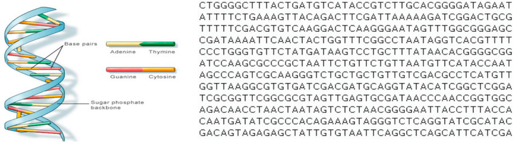

1 Epigenetic Data
1.1 What is epigenetic data?
As you may already know, typically all of the cells in your body contain the same DNA. How, then, do we have different cell types in our body? Your DNA contains a script that is able to produce the proteins required for each specific cell in your body. Which proteins, and subsequently which cells are made, depends on gene expression and regulation, i.e. “the way each cell deploys its genome.”1
Epigenetic data arises from “the study of heritable and stable changes in gene expression that occur through alterations in the chromosome rather than in the DNA sequence.”2

The image above shows quite simply the basics of genetic structures. Several more complex processes are involved during cell replication such as DNA transcription and translation in order to make proteins. A key takeaway in coming closer to understanding gene expression is that Chromatin is a complex structure made up of DNA wound around histone proteins, with some segments of DNA being accessible/inaccessible to further processes. Euchromatin refers to the accessible state, while Heterochromatin refers to a chromatin state in which DNA cannot be transcribed (inaccessible).3 There are many different epigenetic modifications that affect chromatin accessibility.
Some common epigenetic modifications include:
- DNA Methylation: Addition of methyl groups to DNA, affecting gene expression regulation4.
- Histone Modifications: Chemical changes to histone proteins that DNA wraps around, including acetylation, methylation, or phosphorylation. These changes influence chromatin structure and gene accessibility.5
- Chromatin Accessibility: Regions of open chromatin that are accessible to transcription factors (special types of proteins that bind to DNA sequences and regulate gene expression) further dictate which regions of DNA can be expressed6.
In studying gene expression and epigenetic modifications, we aim to more closely understand biological mechanisms that regulate development, disease, and how cells respond to epigenetic factors.
1.1.1 What Does DNA Look Like?
As illustrated in the image above, DNA is structured as a double helix, with two complementary strands intertwined to form the characteristic helical shape. DNA consists of an extremely long sequence composed of four types of nucleotides: Adenine (A), Cytosine (C), Thymine (T), and Guanine (G).
According to the National Cancer Institute (USA), nucleotides within the DNA double helix form complementary pairs—Adenine pairs with Thymine, and Guanine pairs with Cytosine7. These pairs are commonly referred to as base pairs. For example, if one strand of the double helix has the sequence “ATCGG”, the complementary strand will have the sequence “TAGCC”.
Genes are sequences of DNA located at specific positions on chromosomes and can vary in length. Each gene encodes information necessary for producing proteins or RNA molecules, which are essential for the structure, function, and regulation of an organism8. The complete set of genetic material in an organism is known as its genome.
Image highlighting part of a dna sequence and base pairs.9
{kind=link}
1.1.2 Common Epigenetic Sequencing Techniques:
ATAC-Seq (Assay for Transposase-Accessible Chromatin with Sequencing):
oMeasures chromatin accessibility to identify open regions of the genome where transcription factors can bind.
oOutput: Peaks indicating accessible chromatin regions.ChIP-Seq (Chromatin Immunoprecipitation Sequencing):
oUsed to identify DNA regions bound by specific proteins (e.g., transcription factors, histones with specific modifications).
oOutput: Peaks indicating binding sites or modification locations.
1.2 What does epigenetic data look like?
Epigenetic data can be represented in various forms, depending on the type of modification being studied and the methods used to gather the data. ATAC-Seq and ChIP-Seq are the common methods I will focus on, but there are others that may produce different forms of data, such as WGS (whole-genome sequencing) which produces nucleotide sequencing data, or Bisulfite conversion of DNA producing data on methylation levels across the genome.
1.2.1 Representing epigenetic data
Image showing the sequencing pipeline from high-throughput sequencing methods10.
{kind=link}
1. Raw Sequence Reads:
oThese are the basic output of sequencing experiments, such as those from ChIP-Seq or ATAC-Seq.
oReads are processed and aligned to a reference genome before undergoing peak calling.
Lets look at what a few lines of raw sequence read data consists of: The data is taken from Encode Experiment ENCSR817LUF (chIP-Seq). The accession ID of the raw sequence read data is ENCFF397NRK. Genomic data comes in many file formats. These specific raw sequence reads is a compressed FASTQ file.
import gzip
from Bio import SeqIO
import requests
import io
# Define the URL of the FASTQ file
url = "https://www.encodeproject.org/files/ENCFF397NRK/@@download/ENCFF397NRK.fastq.gz"
# Stream the file from the URL
response = requests.get(url, stream=True)
if response.status_code == 200:
# Use BytesIO to handle the file content in memory
with io.BytesIO(response.content) as file_content:
with gzip.open(file_content, "rt") as handle:
for i, record in enumerate(SeqIO.parse(handle, "fastq")):
if i >= 3:
break
print(f"ID: {record.id}")
print(f"Sequence: {record.seq}")
print(f"Quality Scores: {record.letter_annotations['phred_quality']}")
print() # Newline for better readability
else:
print(f"Failed to retrieve the file: Status code {response.status_code}")## ID: B091JABXX110402:1:2204:12975:184709
## Sequence: GTTAGGGTTAGGGTTAGGGTTAGGGTTAGGGTTAGG
## Quality Scores: [31, 30, 30, 32, 36, 37, 36, 32, 33, 32, 35, 36, 37, 33, 33, 34, 37, 37, 36, 33, 34, 30, 37, 37, 37, 33, 34, 33, 38, 33, 33, 32, 33, 35, 37, 36]
##
## ID: B091JABXX110402:1:2205:18641:8399
## Sequence: GGTTAGGGTTAGGGTTAGGGTTAGGGTTAGGGTTAG
## Quality Scores: [22, 27, 31, 30, 30, 33, 31, 32, 31, 31, 24, 36, 37, 36, 33, 34, 33, 37, 37, 32, 32, 34, 22, 37, 36, 30, 23, 35, 27, 29, 28, 28, 23, 31, 26, 35]
##
## ID: B091JABXX110402:1:1207:12202:100922
## Sequence: AGGGTTAGGGTTAGGGTTAGGGTTAGGGTTAGGGTT
## Quality Scores: [33, 33, 36, 37, 31, 34, 34, 36, 37, 36, 29, 33, 35, 36, 39, 37, 32, 33, 35, 37, 34, 37, 33, 34, 36, 38, 39, 25, 32, 35, 36, 38, 37, 38, 32, 32]As you can see, each data entry is a DNA sequence (read). While I’m only showing the first three entries, for each experiment there are millions of sequencing reads. The quality scores indicate the confidence of each base call in the sequence. Higher scores suggest higher confidence. The scores are in Phred format, where a score of 20 corresponds to a 99% base call accuracy, 30 corresponds to 99.9%, and so on.11
2. Peak Calling:
oA method used to identify regions in the genome where there is significant enrichment of sequencing reads. This indicates the presence of DNA-protein interactions (e.g., transcription factor binding sites or accessible chromatin regions).
oPeaks represent areas where epigenetic marks or chromatin accessibility are concentrated.
Representing Peaks:
o P-value or Fold-change:
P-value: Indicates the statistical significance of the peak, helping to distinguish true peaks from background noise.
Fold-change: Represents the difference in read density between treated and control samples, indicating the strength of the signal.
o Types of Peaks:
Categorical Peaks: Simple yes/no indication of a peak’s presence.
Continuous Peaks: More nuanced representation that includes the intensity or enrichment level of the peak, often visualized as a signal track.
Thresholded/Pseudoreplicated Peaks: Usually categorical, these peaks are of high confidence regions from multiple replicates (experiments) or pseudoreplicates (artificial data splits), to ensure reliability and reproducibility.
Example Data Pipeline

This example data pipeline originates from a ChIP-seq experiment targeting the H3K36me3 histone modification in brain tissue. The aim of the experiement is to map the locations where the H3K36me3 histone modification is present along the genome. The yellow bubbles represent downloadable data sets of different types, while the blue boxes represent step types (e.g. peak calling). In the left column are multiple data sets of raw sequence reads, which then undergo data quality steps before being aligned (first blue box) to the reference human genome GRCh38 (denoted by ENCFF110MCL below the reads). The next steps include Peak calling (categorical peaks) and signal generation (continuous peaks) to produce the data we normally use in our machine learning models. This data pipeline process aids in normalisation, noise reduction, and dimensionality reduction of the data.
1.2.3 Transformations to stop extreme p-values
When utlising genomic data which incorporates p-values, it is important to consider and deal with extreme p-values. One way this is done is through using an Arcsinh-transformation (inverse hyperbolic sine).
\(\text{arsinh}(x) = \ln \left( x + \sqrt{x^2 + 1} \right)\)
The arcsinh-transformation as a logarithmic function helps in reducing the significance of outliers and sequencing depth while maintaining variance by compressing the range of the data. This transformation can be used in the data preprocessing stage. The graph below visualises how the transformation works. While extreme values are transformed logarithmically, the smaller values are barely transformed as the function for smaller values is more linear in nature.

Plot of Arcsinh Transformation compared to a log function, made with Desmos available under CC BY-SA 4.0. Text, arrows, and box shape added to image.
{kind=link}
1.3 Sources of epigenetic data
There are numerous public data banks which contain genomic datasets ready to be downloaded.
Blueprint
Blueprint’s genomic datasets are focused on gene expression in healthy and diseased cells mostly relating to haematopoietic cells (cells which develop into different types of blood cells).
Roadmap
The National Institute of Health’s Roadmap Epigenomics Project contains sample datasets from multiple experiements as well as reference and mapping datasets.
Encode
The Encode Project contains a large amount of publicly available genomic data easily filtered and downloaded. The genomic data used in this markdown book is sourced from Encode.
The largest genomic data bank is the UK Biobank, however they require that you apply for access to their datasets.
1.4 UCSC’S Genome Browser
The UCSC Genome Browser is a powerful and versatile tool that allows the visualisation and exploration of many sets of genomic data, especially bigWig files. It offers an extensive collection of genome assemblies, annotation tracks, and functional data, enabling users to examine gene structures, regulatory elements, and genetic variations. With its user-friendly interface and customisable display options, the UCSC Genome Browser facilitates detailed genomic analyses and supports a wide range of applications in genomics and bioinformatics. Whether you’re investigating gene functions, exploring genetic variants, or studying comparative genomics, the UCSC Genome Browser serves as an essential resource for understanding complex genomic information. It is also possible to load and visualise genomic data from other sources such as Encode. While the visualisations are extensive, as you can explore below, the browser can be quite overwhelming for first time users.
The following is an example of what the same chIP-Seq data targeting the H3K36me3 histone modification in brain tissue looks like using UCSC’s Genome Browser. The pseudoreplicated peaks represent categorically, the significant locations along the genome where the H3K36me3 histone modification is present.
The following is an example of ATAC-Seq data from an experiment on T-helper 17 cells (a type of immune system cell). Recall that the ATAC-Seq method aims to find chromatin regions that are accessible for transcription factor binding. The p-value and fold change graphs show continuous peaks, while the IDR thresholded peaks and pseudoreplicated peaks represent the significant locations of accessible chromatin along the genome.